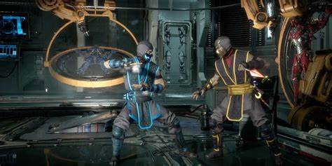
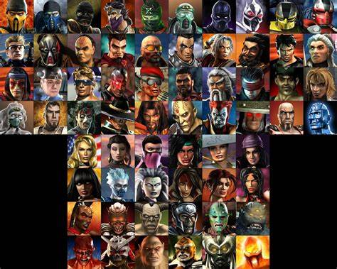
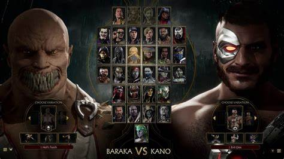

Guias e Dicas sobre Mortal Kombat
Dica 1: Como dominar os combos no Mortal Kombat
Dominar os combos é uma das habilidades mais importantes no Mortal Kombat. Para ser bem-sucedido nas batalhas, você precisa aprender as sequências de botões e treinar até que se tornem naturais para você. Um bom combo pode virar o jogo a seu favor em segundos, e as combinações variam para cada personagem.
Dica 2: Como utilizar o modo Fatality

Fatalities são finalizações icônicas que você pode realizar para derrotar seus oponentes de maneira épica. Para realizar um Fatality, é necessário memorizar a sequência exata de botões enquanto o oponente está no "finishing move" no final da luta. A prática é essencial, então dedique tempo para treinar os movimentos.
Dica 3: Conheça os golpes especiais de cada personagem
Cada personagem no Mortal Kombat tem golpes especiais únicos. Saber quando usar cada um desses golpes pode ser a chave para derrotar seu adversário. Experimente combinar golpes especiais com combos para criar ataques devastadores e surpreender seu oponente.
Dica 4: Estratégias para o modo multiplayer
No modo multiplayer, a paciência e o controle emocional são cruciais. Muitos jogadores tentam aplicar estratégias de pressão, mas um bom jogador sabe quando esperar e contra-atacar no momento certo. Preste atenção nos padrões do adversário e seja imprevisível.